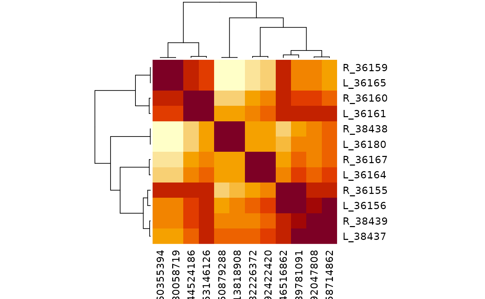
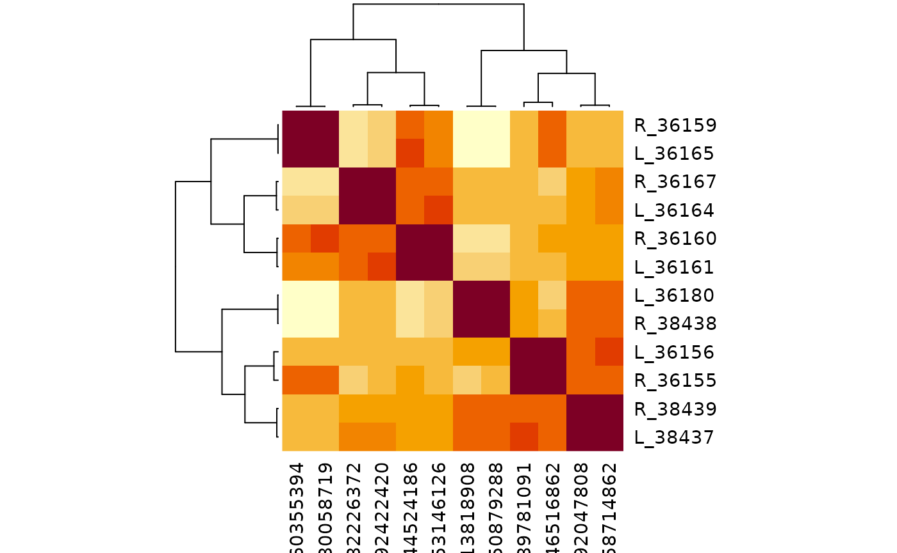

Connectivity Clustering with Predicted Groups
Source:vignettes/connectivity-clustering.Rmd
connectivity-clustering.RmdThis vignette clusters a set of related Aedes neurons by their
connectivity using coconatfly’s
cf_cosine_plot(). Cosine clustering compares neurons by the
partners they share, and those partners must first be grouped, so that
e.g. two neurons that each contact a different member of the same
partner cell type still count as similar.
In well annotated datasets partners are grouped by cell
type. Most aedes neurons do not yet have a type, so we
compare two alternatives:
-
group: the curated group (seeaedes_set_group()). -
pgroup: the predicted group fromaedes_predict_group(), which uses the first available of cell type, curatedgroupand NBLAST cluster.
The chunks below need FlyTable and CAVE access. They are evaluated when the pkgdown website is built; elsewhere saved results are shown instead (see Rerunning this vignette).
Quick start
Once register_aedes_coconat() has been called,
coconatfly metadata for aedes neurons includes a pgroup
column, so you can simply choose the grouping column:
cf_cosine_plot(cf_ids(aedes = "group:36155"), group = "group")
cf_cosine_plot(cf_ids(aedes = "group:36155"), group = "pgroup")Fetch the connectivity once
As an example we use the 12 untyped visual projection neurons in
group 36155. Rather than letting cf_cosine_plot() fetch
connectivity each time, we fetch a connection table once with
group = FALSE and then cluster it with different grouping
columns.
ids <- cf_ids(aedes = "group:36155")
cf_meta(ids) %>% select(id, serial_id, side, group, nblast_group)
#> id serial_id side group nblast_group
#> 1 648518347546516862 36155 R 36155 36155
#> 2 648518347589781091 36156 L 36155 36155
#> 3 648518347560355394 36159 R 36155 36155
#> 4 648518347544524186 36160 R 36155 36155
#> 5 648518347553146126 36161 L 36155 36155
#> 6 648518347592422420 36164 L 36155 36155
#> 7 648518347480058719 36165 L 36155 36155
#> 8 648518347482226372 36167 R 36155 36155
#> 9 648518347513818908 36180 L 36155 36155
#> 10 648518347558714862 38437 L 36155 36155
#> 11 648518347650879288 38438 R 36155 36155
#> 12 648518347592047808 38439 R 36155 36155
x <- multi_connection_table(ids, partners = c("in", "out"), threshold = 5,
group = FALSE)Partner neurons without a label in the chosen column cannot act as shared features and are dropped. We can check what fraction of the partner synapses each column covers:
cov <- x %>%
group_by(partners) %>%
summarise(type = sum(weight[!is.na(type)]) / sum(weight),
group = sum(weight[!is.na(group)]) / sum(weight),
pgroup = sum(weight[!is.na(pgroup)]) / sum(weight)) %>%
mutate(across(-partners, ~ round(.x, 3))) %>%
as.data.frame()
cov
#> partners type group pgroup
#> 1 inputs 0.001 0.126 0.161
#> 2 outputs 0.008 0.324 0.632Cell types cover under 1% of partner synapses, so
group = "type" is not useful here. Using
pgroup rather than group raises coverage of
output synapses from 32% to 63%. Input coverage stays low because most
of the input partners are not yet in FlyTable at all.
Cluster by curated group
cf_cosine_plot(x, group = "group", labRow = "{side}_{serial_id}")
#> Warning in coconat::partner_summary2adjacency_matrix(x[["outputs"]], inputcol =
#> "pre_key", : Dropping: 1451/1715 neurons representing 20029/29629 synapses due
#> to missing ids!
#> Warning in coconat::partner_summary2adjacency_matrix(x[["inputs"]], inputcol =
#> groupcol, : Dropping: 4335/4477 neurons representing 51965/59464 synapses due
#> to missing ids!
Cluster by predicted group
cf_cosine_plot(x, group = "pgroup", labRow = "{side}_{serial_id}")
#> Warning in coconat::partner_summary2adjacency_matrix(x[["outputs"]], inputcol =
#> "pre_key", : Dropping: 1068/1715 neurons representing 10916/29629 synapses due
#> to missing ids!
#> Warning in coconat::partner_summary2adjacency_matrix(x[["inputs"]], inputcol =
#> groupcol, : Dropping: 4261/4477 neurons representing 49905/59464 synapses due
#> to missing ids!
At the time of writing (September 2026) both groupings split the 12
neurons into six left/right pairs, which is reassuring. With
pgroup the extra partner information gave a crisper result:
36155/36156 and 38437/38439 separated cleanly into two pairs rather than
forming one loosely resolved cluster of four.
How the predicted group is defined
aedes_predict_group() returns ids that all live in the
serial_id namespace, taking the first of these that is
available:
-
type: the smallest
serial_idamong neurons of that type (a trailing?is ignored, as are uninformative types listed inbadtypes). -
group: the curated
group. -
nblast_group: clusters of the form
CNNNNNorNNNNN, whereNNNNNis the smallestserial_idin the cluster (surrounding whitespace and a trailing?are ignored). Any other value is ignored, so a bad cluster can be struck out by prefixing it withX(e.g.XC12345) without deleting the information.
Neurons with none of these get NA and are dropped as
partners. With singletons = TRUE they instead fall back to
their own serial_id, i.e. a group of one, so that every
partner in FlyTable keeps its connectivity as a feature, behaving like
group = FALSE for that neuron. This is off by default
because a singleton partner can only be shared by neurons on the same
side of the brain, which tends to pull left/right homologues apart.
Because type-derived ids use the smallest serial_id
among the rows supplied, they can depend on which neurons are in the
table. Within one cf_cosine_plot() call the partner
metadata for each direction is fetched together, so the ids are
consistent where it matters.
You can also compute predicted groups yourself, e.g. to use a custom
badtypes list:
x$pgroup2 <- aedes_predict_group(x, badtypes = c(NA, "", "undefined"))
cf_cosine_plot(x, group = "pgroup2", labRow = "{side}_{serial_id}")
#> Warning in coconat::partner_summary2adjacency_matrix(x[["outputs"]], inputcol =
#> "pre_key", : Dropping: 1068/1715 neurons representing 10916/29629 synapses due
#> to missing ids!
#> Warning in coconat::partner_summary2adjacency_matrix(x[["inputs"]], inputcol =
#> groupcol, : Dropping: 4261/4477 neurons representing 49905/59464 synapses due
#> to missing ids!
Rerunning this vignette
The results above depend on the live FlyTable annotations and CAVE connectivity, so they will change as proofreading and annotation progress.
Website. The pkgdown GitHub Actions workflow has the necessary FlyTable and CAVE credentials and evaluates this vignette in full whenever the site is rebuilt and deploys it on every push to
main(pull requests also build the site, but do not deploy it). To refresh it without a push, trigger the workflow manually from the repository’s Actions tab or withgh workflow run pkgdown.yaml.-
Locally. With FlyTable and CAVE access set up, render the vignette with the live chunks enabled:
Sys.setenv(AEDES_LIVE_VIGNETTES = "true") rmarkdown::render("vignettes/connectivity-clustering.Rmd") Saved results. When not evaluated live (e.g. during
R CMD checkorvignette("connectivity-clustering")from an installed package) the saved figures invignettes/figures/are shown. To refresh them, also setAEDES_SAVE_VIGNETTE_FIGURES=truewhen rendering locally, then update the saved coverage table and the “at the time of writing” text to match.